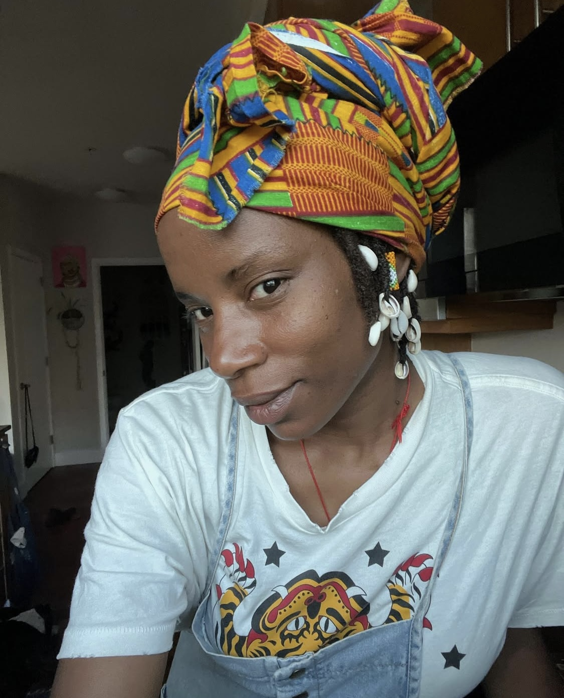

Back to the Garden
by Ngonda Badila
Sunny Side Songs; "Back to the Garden," the first in a vibrant series of illustrated children’s books by Ngonda Badila, aka Lady Moon, reimagines classic nursery rhymes as uplifting songs that promote nutritional, spiritual, and mental wellness. This enchanting interactive app with soundtrack for mobile and tablet devices invite young readers, their families, and communities to sing along to joyful melodies celebrating the culture and lifestyle of farmers, gardeners, and agricultural enthusiasts.

Ngonda Badila
Ngonda Badila, known artistically as Lady Moon, is a passionate community activist and creative force based in New York’s Hudson Valley. As a music teacher at Catskill Montessori School, she nurtures young voices and imaginations weekly. She is also the founder, lead singer, songwriter, and creative director of the live music ensemble Lady Moon & The Eclipse, blending soaring vocals with Neo Soul and Afrobeat influences to create conscious, uplifting music. With over 20 years of experience working with youth, Ngonda has taught and mentored through New York City’s Board of Education, Connecticut nonprofits, The Hudson School District and local youth organizations in Hudson, NY. Deeply rooted in holistic wellness and community, she is also a certified yoga instructor and experienced birth worker, weaving mindfulness and empowerment into all she does. Through her Sunny Side Sing book series, Ngonda reimagines familiar songs with fresh sounds and messages designed to spark new consciousness, joy, and awareness in children—nurturing the next generation of thoughtful, connected individuals within our families and communities.
Ntangou Badila
Ntangou Badila is a Congolese-American visual artist based in Hudson, New York. Her dynamic paintings explore movement, color, and inner ecosystems, drawing from indigenous wisdom, spirituality, and the natural world. Influenced by the legacy of her father, renowned Congolese multidisciplinary artist Andre Elombe Badila, she transitioned from a successful career as an Executive Pastry Chef to pursue painting full-time. Her work has been featured on platforms such as AfroPunk, OkayAfrica, Demur Mag, and Snax Magazine, where she was a cover artist. Badila has exhibited widely, including solo shows Queendwombmen, Gemini Moon, and her 2024 exhibition at Hudson Hall, reflecting her unwavering dedication to the pursuit of creative excellence and spiritual exploration.
© 2026 Obi Kanda Medicinals. All rights reserved.
Sunny Side Songs® is a registered trademark of Obi Kanda Medicinals, LLC.